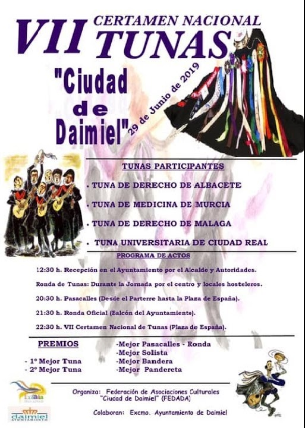
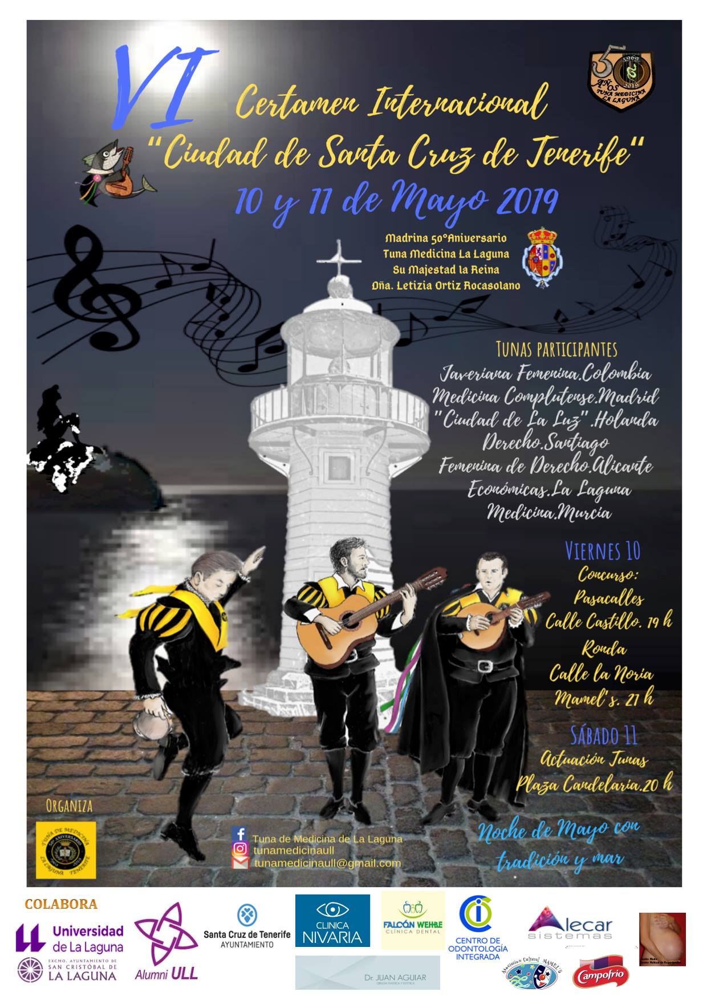

VII CERTAMEN NACIONAL DE TUNAS CIUDAD DE DAIMIEL (CIUDAD REAL)

Ya viene siendo costumbre que nos inviten a este encantador pueblo manchego. No creo que haya que decir mucho de Daimiel a estas alturas... su Parque Nacional "Las Tablas de Daimiel", su Olivo Centenario que preside la Plaza de España
(nada menos que 900 años de edad tiene susodicho arbolito), La Motilla del Azuer (el yacimiento arqueológico más representativo de la Edad del Bronce de la Mancha), su precioso hotel "Las Tablas", su tapeo y gastronomía, sus gentes...
Ahora bien, lo que no esperábamos era la tremenda ola de calor que azotaba el pueblo ese fin de semana... y mira que los murcianicos somos duros a ese respecto...pero qué calor, pijo.
No obstante, fue un auténtico placer, como siempre, volver una vez más.
Nos hicimos con el "Premio al Mejor Bandera" en una noche de calor y calidez a partes iguales.
Y por supuesto, cada vez que nos llamen, acudiremos encantados sin dudarlo.
VI CERTAMEN INTERNACIONAL DE TUNAS CIUDAD DE SANTA CRUZ DE TENERIFE

Qué mejor noticia en este año en el que estamos de 50 aniversario que la invitación de nuestros hermanos de La Laguna para participar en su certamen.
Quién se iba a perder un fin de semana en Santa Cruz de Tenerife, una isla que respira música, con un clima perfecto, y una gastronomía tan rica como variada.
Situado en la zona norte de la isla, el certámen no pudo estar mejor organizado. Un bonito escenario montado en la Plaza de la Candelaria, y alojamiento en el Hotel Adonis Capital, tan cerca de dicha plaza que podías escuchar las diferentes
actuaciones desde tu habitación, con bonitas vistas y cama confortable.
Nos faltaron días, puesto que hay mucho que ver y disfrutar en esta preciosa isla, más grande de lo que uno pudiera pensar.
Por suerte, todos pudimos disfrutar de algo esencial en toda visita a la isla. Se trata de un restaurante espectacular, situado también muy cerca de nuestro hotel y en consecuencia de la plaza donde se celebraban las actuaciones. Estoy
hablando de "La Cuadra Del Palmero", lugar de obligada visita para quien quiera hacerse una idea de la calidez de la gente de la isla y de la espectacular gastronomía de la misma.
Solamente queda decir "hasta la próxima", porque algo tiene esta preciosa isla que te atrapa y te hace querer volver... y ya lo creo que volveremos.
PROGRAMA OFICIAL XXXII CERTAMEN INTERNACIONAL DE TUNAS COSTA CALIDA - CIUDAD DE MURCIA
Lunes 22 de abril de 2019
17:00 h - Ronda de la Tuna de Medicina de Murcia a la Reina de la Huerta y su corte de honor en El Corte Inglés de Avda. de la Libertad.
18:30 h – Actuación de la Tuna de Medicina de Murcia ante la virgen de la Fuensanta en la Plaza del Cardenal Belluga
22.00 h - Gran gala inaugural del XXXII Certamen Internacional de Tunas "Costa Cálida – Ciudad de Murcia" en el Teatro Romea de Murcia, presentada por Juan Manuel Piñero.
Investidura del "Gran Maestre" del Certamen a D. Alfonso de la Cruz López Sánchez, Periodista y director ORO MOLIO 7rtm
Presentación como "Madrina" del Certamen de Dña. María Vicente Abellán, Periodista y Presentadora 7rtm
21:30 h – Actuaciones de Tunas fuera de concurso en la Pérgola de San Basilio:
Tuna de la Asociación de discapacitados Nuevo Horizonte
Tunas de la Facultad de Derecho de Murcia
Tuna de Ciencias Económicas y Empresariales de Murcia
Tuna de Magisterio de Murcia
Tuna de Distrito de Murcia
Jueves 25 de abril de 2019
17:30 h – Desfile de las flores con la participación de la Tuna de la Facultad de Medicina de la Universidad de Murcia.
Visita al certamen de la Reina de la Huerta y sus damas de honor.
21:30 h – Actuaciones de Tunas a concurso en la Pérgola de San Basilio:
Tuna de la UNED de Elche
Tuna de la Facultad de Medicina de la Laguna Tenerife
Tuna Académica de Lisboa, Portugal
Tuna Universitaria de Distrito de Las Palmas de Gran Canarias
Tuna de la Facultad de Ciencias e Ingenierías Físicas y Formales de la Universidad Católica de San María de Arequipa, Perú
Tuna Ciudad de Zipaquirá, Colombia
Viernes 26 de abril de 2019
18:00 h - Recepción del Excelentísimo Ayuntamiento de Murcia a las Tunas participantes, en el salón de Plenos del Ayuntamiento de Murcia.
19:00 h – Ronda de las tunas participantes bajo el balcón del Ayuntamiento de Murcia, en la Glorieta de España.
21:30 h – Gala de clausura del XXXII Certamen Internacional de Tunas "Costa Cálida – Ciudad de Murcia" en La Pérgola de San Basilio:
Entrega de premios
Actuación de la Tuna ganadora
Actuación de la Tuna de la Facultad de Medicina de la Universidad de Murcia
Actuación del Grupo "La Trova" (Canarias)
Organizan: Asociación Cultural Certamen Internacional de Tunas “Costa Cálida – Ciudad de Murcia” y Tuna de la Facultad de Medicina de la Universidad de Murcia
Patrocinan: Ayuntamiento de Murcia, ICA, Estrella de Levante.
Colaboran: Tunas.es, El Corte Inglés, Tvnae Mvndi, Mosquitec.
*La organización se reserva el derecho de alterar o modificar parcial o totalmente la programación.*